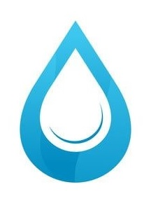

LO QUE NECESITAS SABER DE LA EMPRESA AGUA PLACER
En el corazón de la ciudad de Quibdó, la empresa Aguas Placer es una empresa pública con vocacion de servicio, que tiene como visión ir más allá del cumplimiento de las obligaciones que se derivan directamente de los servicios de Aguas donde la misma aspira hacer referente de la ciudadania quibdoseña en todos los aspectos que esten dentró de su ambito de acción directa.
Nuestra misión es: "responder a las necesidades y las expectactivas de los ciudadanos en cuanto a sus servicios. Operando en coherencia a sus valores y su estrategia corportaiva centrada en la innovación y la sostenibilidad.".
Ofrecemos profesionales experimentados que están para ofrecer a nuestros clientes un producto de alta pureza y calidad.
UBICACION DE LA EMPRESA AGUA PLACER
Nuestra empresa se encuentra ubicada en el barrio Palenque
- Servicio al cliente personalizado
- Productos de alta calidad y pureza
- Grandes beneficios para nuestos aliados